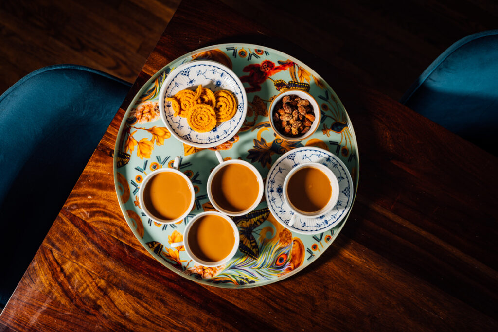

Home
Masala Chai

Masala Chai also known as Masala Tea is India’s most popular drink and is loved by everyone. Imagine the flavors of brewing – sweet, spicy, hot and aromatic spices with sugar, milk and tea… Amazing Right? This Indian Masala Chai is just that – amazingly flavorsome, delicious and totally relaxing.
Ingridients
- 4 cups/960 ml water
- 2 Tbsp Assam or Darjeeling tea leaves
- 2 Tbsp ground chai masala, homemade or store-bought
- ½ cup/120 ml milk
- sugar
making Masala-Chai
- add the water to a small saucepan.
- Add the tea leaves and chai masala
- bring to a boil over high heat
- Reduce the heat to a simmer, cover with a lid
- let simmer for 5 minutes until the liquid turns dark
- For a more potent brew, simmer for 10 minutes.
- Uncover, pour in the milk, and bring to a boil.
- Stir in sugar as needed.
- Remove from the heat, cover with a lid, and let sit for 1 minute.
- Strain the hot liquid through a fine-mesh tea strainer held over a teapot or directly into tea cups
- Serve hot with cookies or teatime treats.